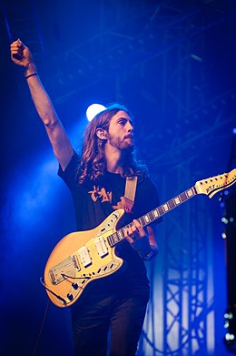

Imagine Dragons
História
Depois de lançar sua estréia de longa-metragem de 2012, Night Visions (com o single vencedor do Grammy, Radioactive), a Imagine Dragons passou quase dois anos trazendo sua marca inventivamente apaixonada de rock alternativo para arenas ao redor do mundo. Para lidar com o caos de uma agenda de turnês que incluiu 130 datas e 50 festivais em todo o mundo, o quarteto de Las Vegas se dedicou a criar material para o próximo álbum. "Tantas coisas estavam mudando para nós tão rapidamente, a única maneira de sentir algum tipo de estabilidade era continuar escrevendo", diz o vocalista Dan Reynolds, que fundou a Imagine Dragons com o guitarrista Wayne Sermon, o baixista Ben McKee e o baterista Daniel Platzman. "Subir para o meu quarto de hotel para trabalhar em novas músicas tornou-se algo que eu esperava ansiosamente todas as noites em turnê", acrescenta Reynolds
Com o Smoke + Mirrors, Imagine Dragons usa a energia frenética da vida na estrada para infundir sua música com tensão crua e intensa vulnerabilidade. Assim como no Night Visions - que levou a Imagine Dragons a acumular mais de 3,9 milhões de vendas de álbuns e 24 milhões de vendas em todo o mundo - a banda trabalha com batidas e grooves para sonhar com rock ritmado que é artístico e visceral. Também revelando a dedicação da banda em mantê-lo caseiro, o Smoke + Mirrors marca o primeiro lançamento gravado em seu novo estúdio caseiro. “Trabalhar em um estúdio alugado geralmente acaba com o processo criativo sendo um pouco apressado, então essa foi a melhor maneira de fazer algo no nosso próprio ritmo”, explica Reynolds.
Em cada música extensa e enganchada no Smoke + Mirrors - incluindo o chocante, mas anthemico single “Bet My Life” e a faixa-título soulful, tribal-drumbeat-powered Imagine Dragons revelar a dor e alegria que vem com a busca da alma e transcendência. "Um dos objetivos em fazer este álbum foi capturar os extremos dos últimos dois anos", diz Reynolds. “Houve momentos na estrada em que eu estava na maior alta, como depois de tocar no Brasil na frente de 80.000 pessoas, e houve outras vezes em que eu estava realmente sentindo o quão difícil e solitário era estar longe da minha família por tanto tempo. Para expor essa emoção, Imagine Dragons arrancou alguns floreios de estúdio e abraçou uma sensação de brilhante imperfeição na produção de Smoke + Mirrors. "Muitos dos vocais do álbum foram aqueles que eu gravei no meu laptop ou um microfone USB barato no meu quarto de hotel, porque essas foram as tomadas que realmente tinham o espírito do momento em que a música foi escrita", ressalta Reynolds. . Ao mesmo tempo, o Imagine Dragons expandiu seu som usando instrumentos coletados em suas viagens, adicionando ainda mais textura e profundidade aos já intricados ritmos e melodias da banda.
A performance ao vivo sempre foi essencial para o Imagine Dragons, que se formou em 2009 e rapidamente conquistou o público de base, excursionando extensivamente e lançando independentemente uma série de EPs. Depois de assinar com a KIDinaKORNER / Interscope Records, a banda fez sua estreia major-label com o lançamento de Continued Silence (um EP de 2012 com o single “It's Time”). Assim que Night Visions chegou mais tarde naquele mesmo ano, Imagine Dragons logo se viu em uma trajetória em direção ao céu que viu o álbum subir para o segundo lugar na parada Billboard 200, assim como o grupo levando para casa a Melhor Performance de Rock para Radioactive. Prêmio Grammy.
Apesar do turbilhão dos últimos anos, o desejo de criar músicas sonoramente aventureiras, mas descaradamente honestas, permaneceu uma constante para a Imagine Dragons. E para Reynolds - que lembra de ter entrado no computador de seu irmão mais velho aos 13 anos para usar o software de gravação e esboçar músicas sobre sua mágoa e frustrações no início da adolescência - o Smoke + Mirrors provou sua experiência mais ousada e sincera nas composições ainda. “Às vezes é realmente assustador pensar em tantas pessoas ouvindo o que eu estou falando nas letras deste álbum, mas eu sei que para melhor ou pior é completamente autêntico e genuíno e verdadeiro para quem somos como uma banda” diz Reynolds. “E essa é a coisa mais importante que você pode fazer como artista, e também a mais mágica: esqueça todos e tudo mais no momento certo.
Integrantes
 DAN REYNOLDS, Cidade natal: Las Vegas, NV, Função: Singer
DAN REYNOLDS, Cidade natal: Las Vegas, NV, Função: Singer
 BEN MCKEE, Cidade natal: Forestville, CA, Função: Bass
BEN MCKEE, Cidade natal: Forestville, CA, Função: Bass
 DANIEL PLATZMAN, Cidade natal: Atlanta, GA, Função: Percussion
DANIEL PLATZMAN, Cidade natal: Atlanta, GA, Função: Percussion
WAYNE SERMON, Cidade natal: American Fork, UT, Função: Guitarra